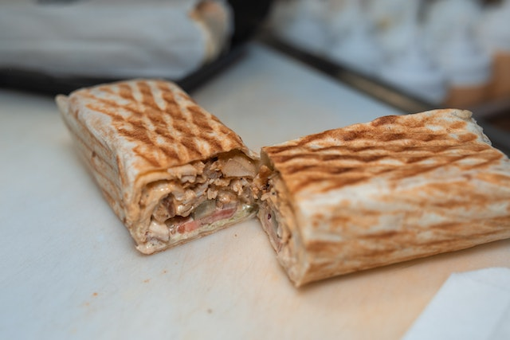

Sharwarma Recipe

Description
Shawarma is a Middle Eastern Recipe. It is made with thinly sliced roasted Meat (Lamb, Chicken, Turkey, or veal) wrapped in flatbread. It looks a lot like Gyro but still differs in so many ways.
If you are craving authentic shawarma, but you do not want to hit the streets or go to the local takeout place, then try making this chicken shawarma recipe at home! The best part about it is that this chicken shawarma recipe comes together quickly and easily, so you can enjoy it whenever the mood strikes! To make delicious shawarma at home, just follow the steps below.
Ingredients
- 2 lb Chicken Thigh boneless
- 1 Onion large Red
- 2 Tablespoons Lemon juice
- 4 cloves garlic (minced)
- 1 Tsp Ginger Minced
- 2 Teaspoon Black pepper
Steps
- TMarinate the Chicken. Wash and pat dry the chicken.
- Add all the Spices to the Chicken and mix very well.
- Cover with a plastic wrap or a tight lid and leave in the fridge for at least 20 minutes.
- Grill The Shawarma. Lay the Chicken pieces on a parchment lined baking pan, transfer to a 425°F and bake for 25 to 30 minutes.
- OCheck to make sure it is cooked through and char it for about 1 to 2 minutes just to make it darker (if you choose)
- NPrepare the Shawarma Sauce- Mix the Ketchup, Mayonnaise, and Cayenne pepper together and set aside.
- Serve the Shawarma. Wash and slice all the Vegetables
- Spread a thin layer of the Mayonnaise and Ketchup mixture on the Tortilla wrap
- Layer the vegetables and Shawarma Chicken on the wrap, drizzle a little more sauce on it and roll it up.
- Optional - Place the rolled wrap on a heavy bottom skillet or a grill and brown the wrap enjoy!